We're on a mission to figure out which TCP & UDP ports are playing nice and open for us. The PNMAP script is a Python tool designed for network scanning, akin to having our personal ninja to stealthily assess the status of ports on a target system or network.
Note: The first 1024 ports are a bit VIP or "well-known" ports, so we need to wear our "root" hats for scanning those.
Before diving straight to coding, let's figure out how to know if a port is open or not through scapy. First, I fired up Scapy on my command-line and ran this:
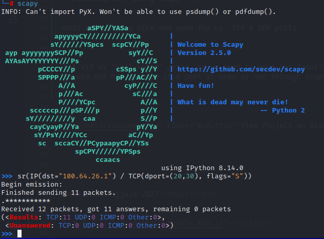
100.64.26.1 is my own Linux VM which has just port 22 open. Our end goal is that our script should only report port 22 on my Linux VM as open.
We are sending a TCP Syn (S) flag to check if TCP is open on the given port or not. Basically, I am politely knocking on doors and checking
if someone is there to respond and open the door for me.
From the output, I see that it returns answered and unanswer-ed ports that didn't feel like chatting. Looking at it, my assumptionis that the talkative ones
are open and the unanswered ones are a no-go. Let's see if my assumption is right.
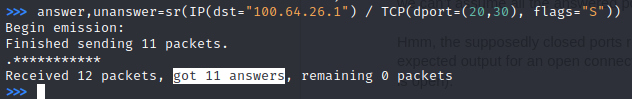
Weird. All the ports answered to the TCP SYN flag I sent (I can guarantee that only port 22 is open). Probably, my assumption is not right.
Let's examine the headers for a few ports to see if I can differentiate between open and close ports.
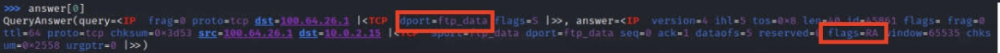
Closed ports were dropping “RA” flags instead of the expected “SA” for the “S” flag we sent. Expected a welcome mat, got a door slam.
Checked for port 22 (which is supposed to be open).
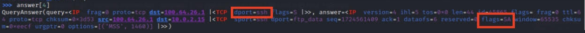
Aha! Port 22 responded with the “SA” flag. So, lesson learned – we can’t just assume; gotta peek at those flags to know what’s up.
So now we need to ensure that we actually check for the flags in the answered ports, that should help us figure out if a port is open.
Let’s see how we can extract the flags portion. We know answers is a list so I’ll just iterate through it.
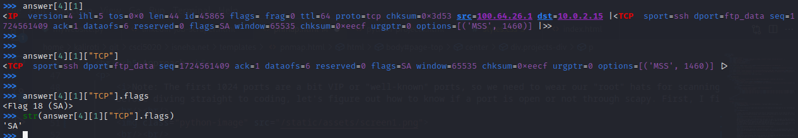
Essentially, str(answer[i][1]["TCP"].flags) would extract the flag the destination port sent, where "i" contains the information of the port that answered.
Neat! Time for a coffee break.
Alright! Let's talk code now.
Libraries in the Ninja Toolkit
The script utilizes several Python libraries to equip our ninja with essential tools
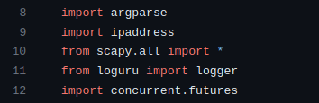
argparse: Handles command-line arguments, allowing users to specify the target, ports, and scanning type.
ipaddress: Facilitates working with IP addresses, crucial for defining target ranges.
scapy: Acts as the ninja's primary weapon, enabling the creation and sending of custom network packets for various scanning techniques.
loguru: Provides logging functionality, helping to keep track of the ninja's actions.
concurrent.futures: Empowers the ninja with multi-threading capabilities, enabling parallel execution of scanning tasks.
Ninja Moves
The script defines three key functions, each representing a different scanning technique.
1. tcpsyn_scan(target, port, scan_results)
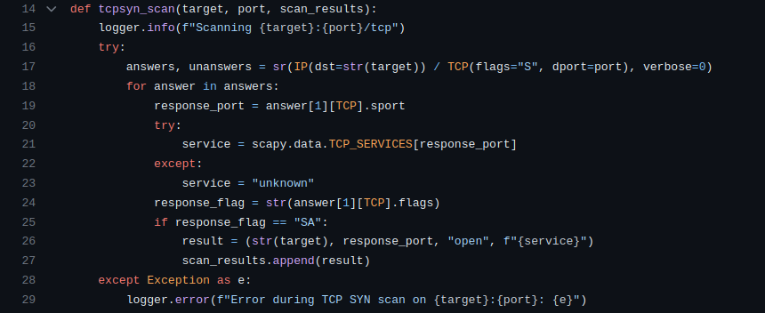
Craft a TCP SYN packet using Scapy (IP(dst=str(target)) / TCP(flags="S", dport=port)).
Send the packet and wait for responses (sr function).
Extract information from the responses – port, service, and response flag.
If the response flag indicates synchronization-acknowledgment ("SA"), consider the port open.
Record the findings in the scan_results list.
2. udp_scan(target, port, scan_results)
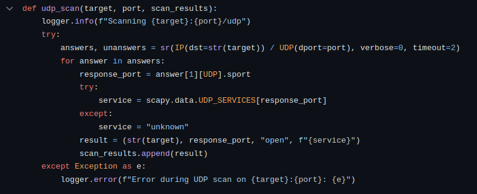
Create a UDP packet using Scapy (IP(dst=str(target)) / UDP(dport=port)).
Send the packet and wait for responses, setting a timeout of 2 seconds.
Extract information from the responses – port and service.
Record open ports and services in the scan_results list.
3. tcpack_scan(target, port, scan_results)
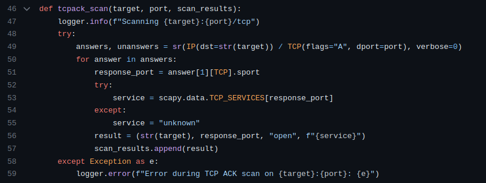
Craft a TCP ACK packet using Scapy (IP(dst=str(target)) / TCP(flags="A", dport=port)).
Send the packet and wait for responses.
Extract information from the responses – port and service.
Record open ports and services in the scan_results list.
Execution Logic
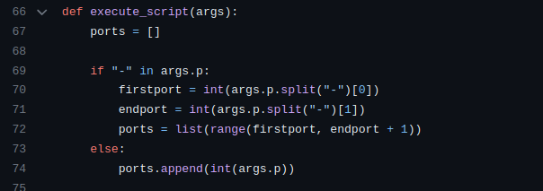
The execute_script function serves as the orchestrator, determining the scan type based on user input and deploying the appropriate ninja technique.
The function starts by initializing an empty list called ports.
It checks if the user provided a range of ports (e.g., "1-100") or a single port.
If it's a range, it extracts the start and end ports and generates a list of ports within that range.
If it's a single port, it appends that port to the list.
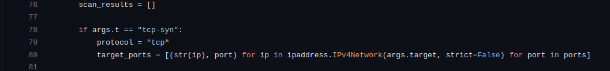
The script initializes an empty list named scan_results to store the results of the scans.
Based on the user's chosen scan type (args.t), it sets the protocol variable accordingly (e.g., "tcp", "udp", or "tcp-ack").
It uses a list comprehension to dynamically generate a list called target_ports, which contains tuples of target IP addresses and ports.
Scanning for multiple ports is painfully slow. Thus, to fasten the process, I used multithreading.
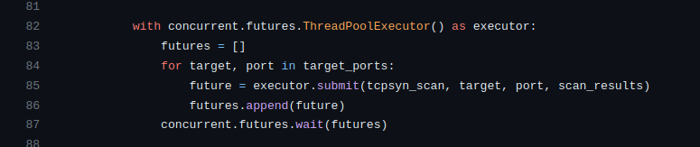
The script utilizes the ThreadPoolExecutor from the concurrent.futures module to enable concurrent execution of scanning functions.
It iterates through the target_ports list, submitting tasks to the executor based on the chosen scan type (args.t).
For each target and port, it submits the appropriate scanning function (tcpsyn_scan, udp_scan, or tcpack_scan) along with the necessary parameters.
The concurrent.futures.wait function ensures that the script waits for all tasks to complete before moving forward.
Presenting the output
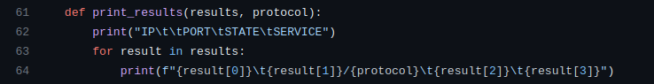
Once all scanning tasks are completed, the script calls the print_results function to display the results.
The print_results function takes the scan_results list and the protocol as parameters and prints the results in a neat table format.
So, in a nutshell, PNMAP is like your digital ninja companion for exploring the hidden corners of networks. It's got these cool moves – TCP SYN, UDP, and TCP ACK scans – each with its unique style of checking if a port is open or not. The script is like the conductor of this ninja orchestra, taking your input, dynamically creating a hit-list of IP addresses and ports, and then unleashing its ninja army concurrently to get results faster.